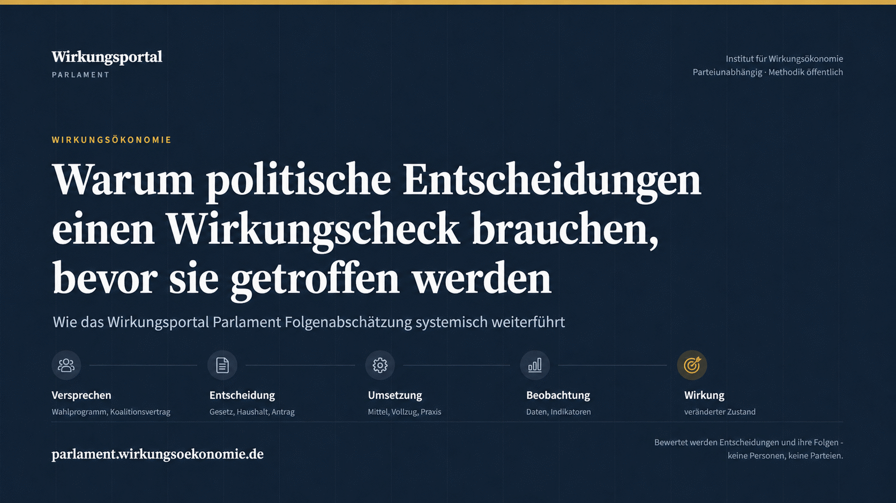

Dossier
SDGs als Risiko- und Resilienzregister
Das Dossier erklärt die neue Lesart ausführlich und macht die Verbindung zu Systemresilienz, Risikointelligenz und Rückkopplung sichtbar.
Dossier lesen Wirkungsökonomie
Wirkungsökonomie
WAS PREISE, BERICHTE UND GEWINNE BISLANG NICHT ZEIGEN
Und zentrale Kontrolle ist keine Lösung. Die Wirkungsökonomie gibt Märkten, Politik, Kapital und öffentlichen Entscheidungen einen besseren Kompass: Wirkung statt Kapital, Systemresilienz statt Blindflug.
Sie fragt nicht nur, ob etwas profitabel ist. Sie fragt, welche Folgen wirklich entstehen: für Menschen, Ökosysteme, Institutionen und Demokratie.
Schädliche Wirkung darf sich nicht länger rechnen.
Positive Netto-Wirkung muss sich lohnen.
Wirkung statt Kapital.
SDGs · SDG+ · Systemresilienz
Die SDGs sind nicht nur Nachhaltigkeitsziele. Wirkungsökonomisch gelesen beschreiben sie Mindestbedingungen stabiler Gesellschaften, Märkte, Lieferketten, Ökosysteme und Institutionen. SDG+ ergänzt die demokratische, mediale, rechtliche, digitale und gesellschaftliche Korrekturfähigkeit.
Dossier
Das Dossier erklärt die neue Lesart ausführlich und macht die Verbindung zu Systemresilienz, Risikointelligenz und Rückkopplung sichtbar.
Dossier lesenJournal
Der Journalbeitrag erklärt Nachhaltigkeit als langfristig gesicherte Wirkungsresilienz von Mensch, Planet und Demokratie – mit Rückstellung, Regeneration, Lernen und Nicht-Externalisierung.
Mehr erfahrenGlossar
Systemresilienz, Risikoregister, Resilienzmanagement und Wirkungsrückkopplung sind im Glossar verlinkt und zitierfähig.
Mehr erfahrenDie Ausgangslage
Energie und Sicherheit, Lieferketten und Rohstoffe, Klimafolgen und Finanzmärkte, Datenräume und Medienöffentlichkeit: Die Krisen dieser Jahre lassen sich nicht mehr sauber voneinander trennen. Zugleich geraten Demokratien unter Druck - durch Polarisierung, Desinformation, autoritäre Angebote und wachsendes Misstrauen gegenüber Institutionen.
Diese Lage ist keine Summe einzelner Probleme. Sie ist ein Wirkungsnetz - mit einem gemeinsamen Konstruktionsfehler: Unsere Steuerung ist wirkungsblind. Was Entscheidungen bei Menschen, Ökosystemen und Institutionen wirklich anrichten oder aufbauen, fließt nicht in die Entscheidungen zurück.
Die vollständige Diagnose lesen · Was das für Vermögen und Geschäftsmodelle heißt
Kurz erklärt
Warum gleiche Preise nicht dieselben Wirkungen bedeuten - und wie die Wirkungsökonomie diese Unterschiede für Preise, Förderung und öffentliche Beschaffung sichtbar macht.
Rundgang
Ein kurzer Überblick über alles hier: die WÖk-KI und den Wirkungscheck, den Methodenraum, die Akademie, das Institut, das Quellenverzeichnis und deinen persönlichen Wirkungsraum.
Die Lösung
Die Wirkungsökonomie ist kein Appell und kein Gegenmodell, sondern ein Mechanismus: Sie repariert die fehlende Rückkopplung zwischen Entscheidungen und ihren realen Folgen.
„Gewinn ist nicht das Problem. Das Problem ist, dass sich schädliche Wirkung noch rechnet - und positive Netto-Wirkung oft nicht.“
01 · Der Maßstab
Heute richten sich viele Entscheidungen vor allem nach Geld. Die Wirkungsökonomie richtet sie nach positiver Netto-Wirkung auf Mensch, Planet und Demokratie aus - bewertet wird nicht der isolierte Einzelvorteil, sondern die Netto-Wirkung.
Zum Modell02 · Die Methode
Produkte, Unternehmen und Entscheidungen werden danach bewertet, ob sie Mensch, Planet und Demokratie stärken oder schädigen. Diese Bewertung wirkt zurück in Preise, Steuern, Kapital und Entscheidungen. Reporting beschreibt - Wirkungsrückkopplung verändert.
Wichtige Instrumente sind Scorecards, Netto-Wirkungs-Index, Schutzregel, Wirkungssteuer und Wirkungsrat.
Methode verstehen03 · Der Prozess
Vorhandene Daten aus Reporting, SDGs, Lieferketten und Produktpässen werden Schritt für Schritt in Wirkungsklassen, Steuerklassen und wirtschaftliche Anreize übersetzt.
Prozess ansehenVorhandene Informationen aus Produkten, Lieferketten, Reporting und Alltag werden nutzbar.
Wirkung wird als positive, negative oder neutrale Zustandsveränderung eingeordnet.
Preise, Steuern, Förderung, Kapitalzugang und Beschaffung reagieren auf Netto-Wirkung.
Evaluation, Rechtsschutz, Wirkungsrat und offene Daten halten das System korrigierbar.
Einordnung: Kein Gegenmodell, kein zentraler Plan - Fragen & Einwände · Worin sich die WÖk von GWÖ, Donut & ESG unterscheidet · Leitartikel: Wir messen das Falsche
Aktuell aus dem Journal
Der jüngste Journalbeitrag der Wirkungsökonomie - automatisch aktualisiert.

Politik & Demokratie · 15.08.2026 · 15 Min.
Das Wirkungsportal Parlament verbindet Folgenabschätzung, Entscheidungsreife, Beobachtung, Zurechnung und Rückkopplung zu einer durchgehenden Wirkungslogik.
Aktuellen Beitrag lesenWirkungsfinanzpolitik · 15.08.2026
Eine wirkungsökonomische Gesamtanalyse des Sondervermögens Infrastruktur und Klimaneutralität: Von der Klimakompatibilität zur positiven Netto-Wirkung für Mensch, Planet und Demokr
Beitrag lesenWirkung und Demokratie · 09.08.2026
Der Wahl-O-Mat ist Teil einer gesellschaftlichen Verstärkungsschleife: Auswahl, Framing und institutionelle Reichweite entscheiden mit darüber, welche politischen Problemdefinition
Beitrag lesenArchiv
Suche, Filter und Schlagworte führen gezielt durch das vollständige Archiv.
Zum ArchivWeiterführend
Grundlagenwerk, Journal, Podcast und Akademie führen über die Startseite hinaus - zum Lesen, Hören und Lernen.
Das Buch
Das frei zugängliche Grundlagenwerk begründet die Wirkungsökonomie als eigenständiges Ordnungsmodell und bildet die theoretische Grundlage dieser Website.
Zur Buchseite PDF herunterladenJournal
Im Journal werden politische, wirtschaftliche und gesellschaftliche Entwicklungen nach ihrer Wirkung gelesen: Was stärkt Mensch, Planet und Demokratie?
Zum Journal Zum ArchivPodcast
Die Podcast-Reihe erklärt die Wirkungsökonomie ruhig und bildhaft - jede Folge mit Player, Transkript und Anschlussseiten.
Zur Podcast-Übersicht Feed abonnierenAkademie
Der langfristige Lernbereich der Wirkungsökonomie: 9 Studienabschnitte von Verstehen über Steuern bis Anwenden, mit Praxisprojekt.
Zur AkademieDirekt in die Themen: Alle Wirkungsfelder · Wirtschaft & Unternehmen · Staat, Recht & Demokratie · Finanzsystem & Kapital · Gesundheit · Stranded Assets · Wirkung politischer Sprache
Direkt in die Werkzeuge: Alle Methoden & Werkzeuge · Wirkungswahl-Kompass (in unabhängiger Prüfung) · Impact Controlling · Scorecards & NWI · Produktwirkungs-Simulator · WÖk-Scanner · Politische Sprache prüfen · Debatten-Kompass · Öffentlicher Wirkungsraum
Vertrauen
Die Wirkungsökonomie ist als offenes Wissenssystem dokumentiert: mit Grundlagenwerk, Glossar, Methoden, Quellen und klaren Schutzlinien.
Persönlicher Einstieg zur Entstehung der Wirkungsökonomie: vom Zweifel an heutigen Erfolgsmaßstäben zur Frage nach realer Wirkung auf Mensch, Planet und Demokratie.
Autorin und Ursprung
Physikerin, Nachhaltigkeitsstrategin, Autorin und Begründerin der Wirkungsökonomie.
Mehr über Natalie Weber LinkedIn-ProfilWissensbasis
Das Grundlagenwerk, der Referenzrahmen und die Begriffssystematik machen Annahmen und Bewertungslogik nachvollziehbar.
Grundlagenwerk lesenSchutzlinien
Demos ersetzen keine Beratung, treffen keine amtlichen Entscheidungen und bewerten keine Personen.